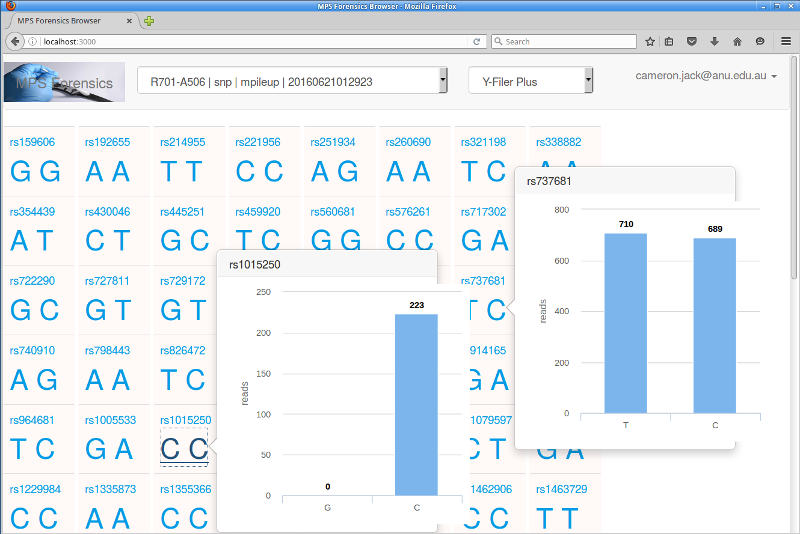

Once logged in to the SNP/STR Viewer, if you have completed SNP pipeline runs with Freebayes or Mpileup, you can view the results by clicking on the box directly to the right of the MPS Forensics graphic and choosing your data set from the drop down. To make the data show, you will need to change the panel to one of the Y-chromosome panels, such as Y-Filer Plus, as shown in the image below:
To view the reads and SNP calls for any panel locus, double click on the genotype of choice. Another single click will close the image. Clicking on the rsID above the genotype will open the appropriate dbSNP entry online.